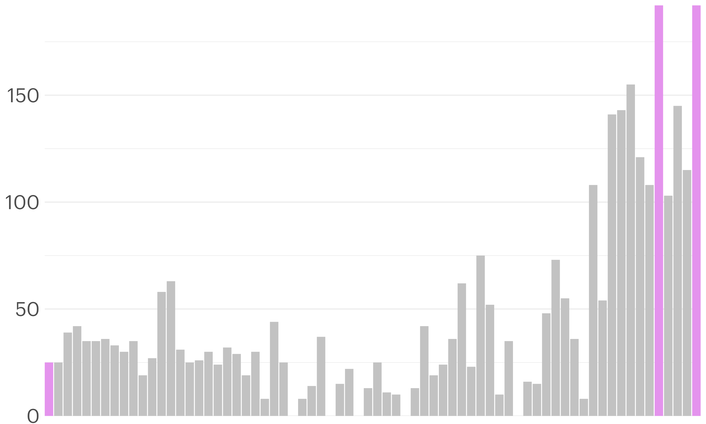
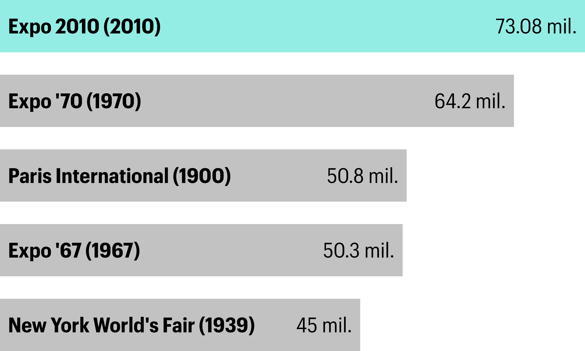
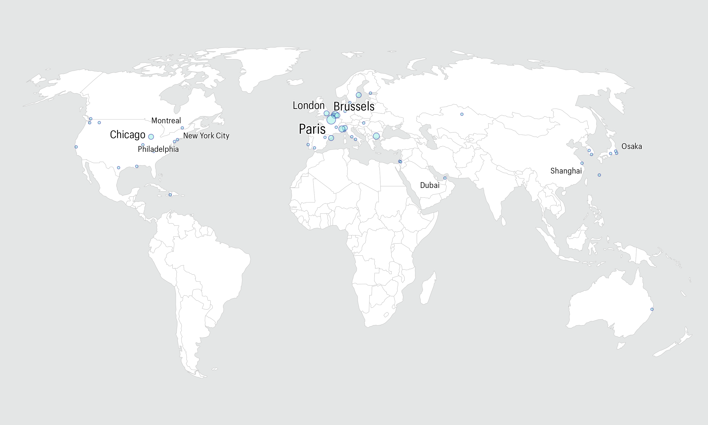

A Visual Journey Through World Exhibitions
The designation “World Exposition” refers to a class of the largest, general scope exhibitions of up to 6 months’ duration. The Bureau International des Expositions (BIE) sanctions world expositions. Some have been recognised retrospectively because they took place before the BIE came into existence.
This exploration encompasses a rich tapestry of human achievement and cultural exchange spanning over 170 years, excluding BIE-recognised International Horticultural Exhibitions.
The Grand Narrative of World Exhibitions
World Exhibitions, also known as World Expos, have long served as global stages for nations to showcase their achievements, exchange ideas, and glimpse into the future. These grand events have not only reflected the zeitgeist of their times but have also shaped the course of progress in art, science, and technology.
Each point on this map represents a moment where the world came together to marvel at the heights of human achievement and to dream of what might come next.
The journey begins in 1851 with The Great Exhibition, held in London’s Hyde Park.

This pioneering event attracted six million visitors and showcased the industrial might of the British Empire alongside innovations from around the world.
The Eiffel Tower, now synonymous with Paris, was originally built as the entrance arch for the 1889 World’s Fair. It was intended to be dismantled after 20 years but fortunately survived to become one of the world’s most recognizable landmarks.

Over the span of 173 years, World Expos have graced 51 cities across four continents, each event a unique snapshot of its era’s dreams, achievements, and anxieties.
Despite their global nature, World Expos have never been hosted in Africa or South America.
The 1893 World’s Columbian Exposition in Chicago introduced several innovations that are now commonplace. It was the first expo to have a dedicated amusement area, the Midway Plaisance, which became the model for modern amusement parks. It also debuted the Ferris Wheel, created as America’s answer to the Eiffel Tower.

The size of the circles on the map indicates the number of times each city has hosted a World Expo. Paris has organized an impressive seven events between 1855 and 1937.
The 1970 Osaka Expo in Japan was the first to be held in Asia. It showcased the world’s first IMAX film and featured a moon rock brought back by the Apollo 11 mission just a year earlier.

World Expos have often coincided with significant historical milestones. The 1876 Centennial Exposition in Philadelphia celebrated the 100th anniversary of American independence, while Expo 67 in Montreal marked Canada’s centennial year.
The 1958 Brussels World’s Fair introduced the world to the Atomium, a giant model of an iron crystal magnified 165 billion times. Originally intended to be demolished after the expo, it remains standing today as a museum and iconic symbol of Brussels.

The number of countries participating in World Expos has grown significantly over time. The 1851 Great Exhibition hosted 25 countries, while Expo 2010 in Shanghai and Expo 2020 in Dubai saw participation from 192 nations.

Speaking of Expo 2010 in Shanghai, it holds the record for the most visited World Expo in history, attracting an astounding 73 million visitors over its six-month run.

World Expos have often been platforms for introducing new technologies to the public. The telephone was demonstrated at the 1876 Philadelphia Expo, while the videophone debuted at the 1964 New York World’s Fair.

The 1939-40 New York World’s Fair, with its theme “The World of Tomorrow,” offered a optimistic vision of the future just as the world was on the brink of World War II. It introduced television to the American public and showcased a curious attraction called Futurama, which predicted the highway systems that would transform America in the coming decades.

Some World Expos have left lasting impacts on their host cities’ infrastructure. The Montreal Metro system was inaugurated just before Expo 67, while the Shanghai Expo in 2010 led to major urban renewal projects.
The most recent World Expo, Expo 2020 Dubai (held in 2021-22 due to the pandemic), became the first to be held in the Middle East, Africa, and South Asia region. Despite global challenges, it attracted over 24 million visitors.

As we look at our map, we can see the shift of World Expos from predominantly Western locations in the 19th and early 20th centuries to a more global distribution in recent decades, reflecting changing geopolitical and economic realities.
The upcoming Expo 2025 in Osaka, Japan, will focus on designing future society for our lives, showcasing how World Expos continue to evolve and address contemporary global challenges.

From the Crystal Palace of 1851 to the futuristic pavilions of recent expos, these events have consistently pushed the boundaries of architecture and design, leaving behind iconic structures that often become symbols of their host cities.

Data source: Wikipedia’s List of world expositions, via TidyTuesday
Images: Wikipedia & NASA
Map and charts: Georgios Karamanis
Made with Closeread · Code available on GitHub